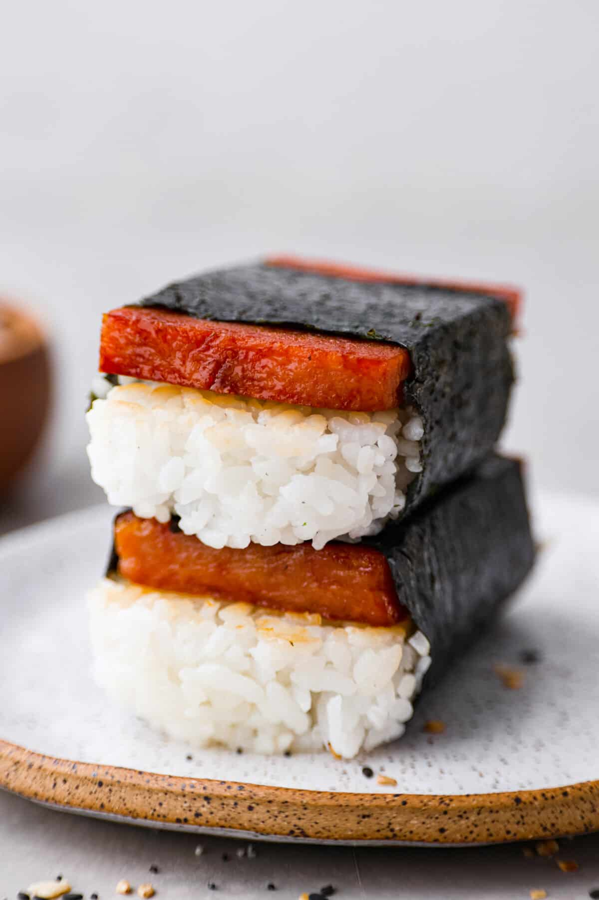

Spam Musubi

Description
Spam Musubi is an easy to make snack that can be enjoyed at home or on the go. It is simple to make and doesn't require many ingredients.
Ingredients
- Spam
- Rice
- Teriyaki Sauce
- Seaweed
Steps
- Cook the rice
- Cook the spam in the teriyaki sauce
- Lay down seaweed on surface
- Put musubi maker on seaweed and rice into musubi maker about 3/4 of the way
- Put Spam on top
- Use press to press spam onto rice
- Wrap rice and spam with the seaweed
Home